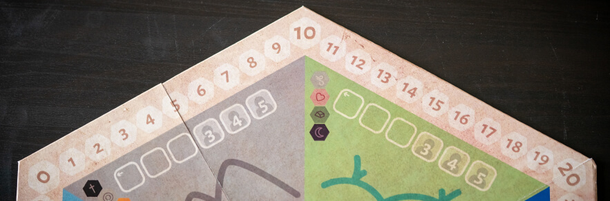

Hexed is, so far, mostly a board game idea, but one that we believe strongly in. The goal of the game is to cast spells by building specific shapes using energy represented by hexagonal tiles. The energy is acquired from the different sources on the game board, through worker placement.
When designing the board for Hexed we strived to make it as intuitive as possible.
The absolutely biggest feature of the game board for Hexed is its locations, and not only because they take up basically all of it. They’re also where you will send your apprentices to fetch energy or perform spells.
The outer locations, the sources, are where the energy is located. They each have their own color and simplistic illustration to make them distinguishable from each other.
Each source has four types of energy, and they also have a corresponding source with the same types, but with the rarities reversed. These pairs are placed on opposite sides of the board both so it’s easy to figure out which sources are paired, and for gameplay purposes.
Each source has 4 different energy types, with varying rarity. To help players remember these, the types are printed on the sources. The most common source is printed at the top, and the rarest at the bottom.
On each location there are spaces for the apprentices to be placed on. They are clearly lined squares with an arrow showing from which space they should start being placed. There are also faded out squares marked for 3+, 4+ and 5 player games. This way you don’t have to remember how many spaces are available on each player count.
On each source there is space for a die. The die is used as a round counter that also shows which location will be resolved first each round. The spaces for the die has numbers so you can easily randomize which location to start the first round on by rolling the die.
Most of the victory points you get in Hexed are accumulated during the game. Therefore there is a score track along the outer edges of the game board. The spaces are made so each edge of the hexagon has 10 steps, with the tens being placed in the corners as well as being bigger than the other spaces. This is done in order to make tallying up points easier.
